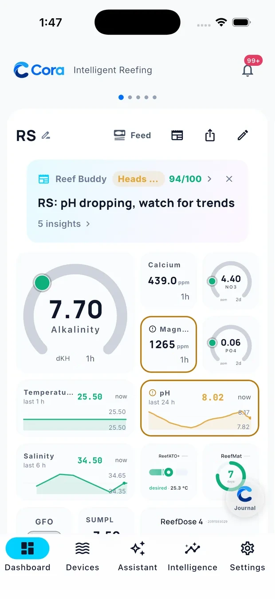
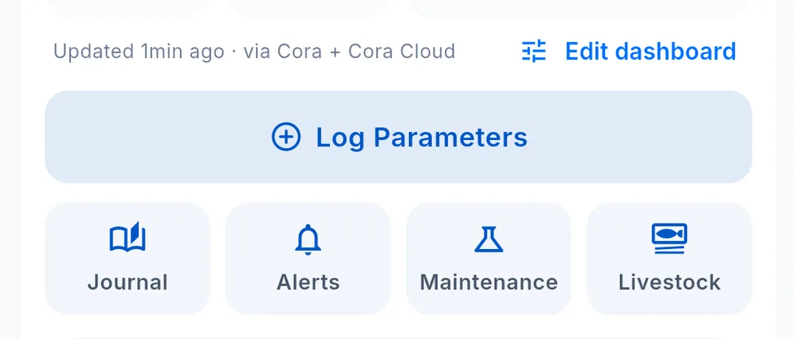

Reading your dashboard
The dashboard is a grid of widgets, each showing one thing about one tank. What is on it is entirely up to you — see Editing your dashboard.

The tank header
At the top of every dashboard:
- The tank name, with a small glyph beside it — that one is a quick rename, nothing more
- Feed — pauses flow and skimming for a feeding, then puts everything back
- Reef Buddy — opens this morning's briefing
- Share — sends a snapshot of the dashboard
- The pencil on the right — opens the tank profile
With more than one tank, swipe sideways to move between them.
The Reef Buddy card
Below the header, a card summarises the most recent briefing: a headline, its Stability and Data scores, and the number of insights. Tap it to open the full briefing, or dismiss it with ×. A new card appears with the next briefing.
How to read a parameter widget
A widget that shows a measured parameter carries the same three things in the same places. Device and control tiles — an outlet, a dosing unit, a pump — show their own state instead, because there is no single reading behind them.
The value is the reading itself, large and central.
The age sits below or beside it — now, 1h, 2d. This is how long ago the reading was taken, not how long ago the screen refreshed. A number that has not moved in two days says 2d, and that is information.
The source badge is the small mark next to the age. It tells you where the number came from: a probe, a controller, a lab result, or you with a test kit. Tap any widget to see the source spelled out along with its recent history.
Colours
Cora uses colour sparingly, and always to mean the same thing:
| Colour | Meaning |
|---|---|
| Green | Comfortably inside the range for this parameter |
| Amber | Close to an edge — usually still inside the range, within the last tenth of it |
| Red | Past the edge, and worth acting on |
| Grey | No verdict: no recent reading, or no usable range to judge against |
A widget outlined in amber or red is one Cora wants you to look at. The outline is on the widget, not just the number, so you can spot it while scrolling.
Below the widgets

At the bottom of the dashboard:
- Edit dashboard — opens the dashboard editor
- Log Parameters — enter test-kit readings by hand
- Journal · Alerts · Maintenance · Livestock — shortcuts to those areas for this tank
A line above them shows when the dashboard last updated and which sources it drew on.
Tapping through
Tap any widget to open its detail: the full history as a chart, every source that has reported it, and the thresholds currently applied. From there you can log a new reading by hand, change the range, or look further back.
If a widget has no value
A widget shows a value once it receives one. When it is blank, the reason is usually one of these:
- The device is offline — check the Devices tab
- The parameter has no source yet — log it by hand, or connect equipment that reports it
- The parameter has never been reported or logged — nothing has been recorded for it yet
An old reading does not vanish because the chart window is shorter than its age. It stays on the widget with its age shown, so a stale value reads as stale rather than as missing.
See Troubleshooting for anything beyond these.
Written for Cora Max 0.28.33 and Cora Mobile 0.5.54.
Still stuck? Email cora@coraiq.tech and we'll help.